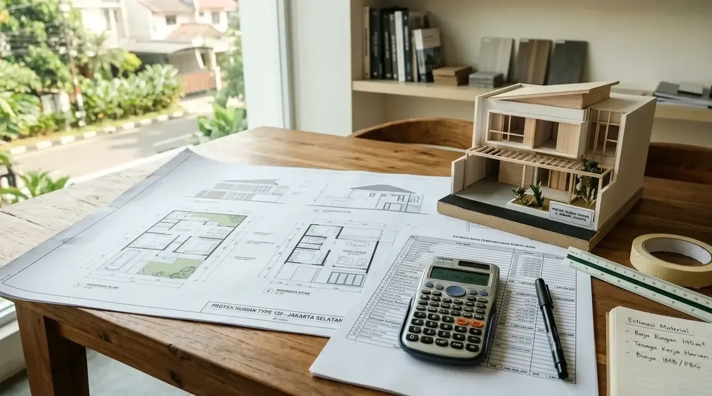

Berapa Rincian Biaya Bangun Rumah per Meter 2026 Berdasarkan Spesifikasi?
Perhitungan biaya bangun rumah per meter 2026 membutuhkan pengelompokan berdasarkan mutu material dan tingkat kerumitan arsitektur untuk menghasilkan estimasi anggaran yang akurat dan terukur.
Berdasarkan laporan pengawasan konstruksi nasional periode 2025/2026, rata-rata biaya pembangunan hunian di kawasan perkotaan Indonesia mengalami kenaikan berkisar 5,1% dibanding tahun sebelumnya. Untuk memastikan pembangunan rumah berjalan lancar sesuai budget, berikut adalah pembagian estimasi biaya per meter persegi untuk tahun 2026:
| Tipe Spesifikasi Bangunan | Kisaran Biaya per m² (2026) | Spesifikasi Material & Finishing Utama |
|---|---|---|
| Rumah Kelas Sederhana / Standard | Rp3.500.000 - Rp4.500.000 | Pondasi batu kali, struktur beton bertulang standar, dinding bata ringan, lantai keramik 40x40, atap baja ringan + genteng metal. |
| Rumah Kelas Menengah / Medium | Rp5.000.000 - Rp7.000.000 | Pondasi cakar ayam, dinding bata merah, lantai granit tile 60x60, sanitari setara Toto, atap baja ringan + genteng keramik. |
| Rumah Kelas Mewah / Premium | Rp7.500.000 - Rp10.000.000+ | Pondasi tiang pancang/bore pile, marmer alam/granit import, kosen aluminium kelas atas/kayu jati, sanitari premium, smart home system. |
Perhitungan di atas menjadi acuan dasar sebelum Anda memulai proses perencanaan bersama mitra pengerjaan fisik bangunan yang kompeten.
- Tren biaya material bangunan 2026 mengalami penyesuaian rata-rata 4,5% hingga 6,2% berdasarkan data indeks harga grosir konstruksi nasional.
- Lokasi pembangunan di kawasan perkotaan umumnya memiliki biaya lebih tinggi dibanding daerah pedesaan akibat biaya logistik dan tenaga kerja.
Komponen Utama Apa Saja yang Memengaruhi Total Anggaran Pembangunan?
Struktur biaya pembangunan rumah mencakup pekerjaan prapembentukan, pengadaan material struktur dasar, instalasi utilitas, hingga tahap penyelesaian dekoratif eksterior dan interior secara mendalam.
Secara teknis, rincian biaya bangun rumah per meter 2026 terbagi menjadi beberapa komponen kritis yang wajib dialokasikan secara cermat:
- Biaya Pekerjaan Persiapan & Pembersihan Lahan: Pembersihan area, pemetaan elevasi, pembuatan bowplank, serta penyediaan fasilitas kerja sementara.
- Biaya Pekerjaan Struktur & Pondasi: Penggalian tanah, pembesian, pembuat bekisting, pengecoran beton, serta pembuatan kerangka kolom dan balok lantai.
- Biaya Dinding, Pintu, & Jendela: Pemasangan pasangan dinding (bata merah/bata ringan), plesteran, acian, kusen, daun pintu, dan jendela.
- Biaya Penutup Atap & Plafon: Rangka baja ringan, pemasangan genteng, lisplang, serta rangka dan penutup plafon gypsum.
- Biaya Finishing & Sanitari: Pengecatan dinding interior/eksterior, pemasangan lantai, pemasangan kloset, wastafel, shower, dan aksesori air.
- Biaya Instalasi Mekanikal, Elektrikal, & Plumbing (MEP): Pengkabelan listrik, titik sakelar/stopkontak, jaringan pipa air bersih dan air kotor, septic tank.
Mengabaikan salah satu komponen di atas berisiko memicu potensi cost overrun yang mengganggu kelangsungan proyek pembangunan Anda.

Tim kontraktor profesional sedang melakukan koordinasi perencanaan anggaran dan spesifikasi material bangunan.
Mengapa Memilih Kontraktor Bangunan Berpengalaman Sangat Penting?
Penggunaan mitra Kontraktor Bangunan profesional menjamin kepastian anggaran, ketepatan jadwal eksekusi, serta jaminan mutu material yang sesuai dengan spesifikasi teknis pekerjaan.
Memilih Kontraktor Bangunan memberikan keuntungan finansial jangka panjang bagi pemilik bangunan:
- Transparansi Rancangan Anggaran Biaya (RAB): Setiap detail pembelian material dan nilai jasa tercatat secara eksplisit tanpa adanya biaya tersembunyi (hidden cost).
- Efisiensi Pembelian Material: Jasa profesional memiliki akses langsung ke distributor utama material bangunan dengan harga borongan bersaing.
- Pengawasan Kualitas Struktur: Pelaksanaan pengecoran dan pemasangan kerangka dipantau langsung oleh ahli teknik sipil berpengalaman.
- Garansi Pemeliharaan Pasca-Pembangunan: Adanya jaminan pengerjaan (retensi) memberikan perlindungan penuh terhadap cacat struktur maupun kebocoran.
Jika Anda menginginkan pembangunan proyek hunian maupun gedung kantor berjalan tepat waktu tanpa risiko pembengkakan biaya, memercayakan pengerjaan kepada Kontraktor Bangunan terpercaya adalah langkah komersial paling rasional.
- Pastikan kontraktor memiliki Surat Perjanjian Kerja (SPK) bernomor dan ber-materai sah.
- Minta rincian spesifikasi merek material yang akan digunakan pada lampiran RAB.
- Pastikan adanya pasal masa garansi pemeliharaan tertulis minimal 3 hingga 12 bulan.
Apa Saja Kesalahan Umum yang Mengakibatkan Anggaran Bangun Rumah Membengkak?
Kesalahan perencanaan anggaran umumnya bersumber dari perubahan desain di tengah pengerjaan, pemilihan material tanpa simulasi harga, serta pengawasan lapangan yang tidak terstruktur.
Berikut adalah beberapa kekeliruan fatal yang kerap menguras anggaran proyek fisik:
- ❌ Tergiur Harga Borongan Terlalu Murah: Menggunakan jasa tanpa legalitas dan spesifikasi tertulis sering berujung pada penurunan kualitas material secara sepihak.
- ❌ Perubahan Desain (Change Order) Berulang: Mengubah tata ruang saat proses pengecoran berlangsung akan menghancurkan kalkulasi biaya awal secara masif.
- ❌ Tidak Menyediakan Dana Cadangan (Contingency Fund): Idealnya, pemilik proyek mengalokasikan dana darurat sebesar 10% hingga 15% dari total nilai RAB untuk mengantisipasi dinamika harga material.
FAQ seputar Biaya Bangun Rumah per Meter 2026
Kesimpulan Praktis
Memahami perhitungan biaya bangun rumah per meter 2026 merupakan pijakan krusial untuk mengamankan efisiensi investasi properti Anda. Dengan membuat Rancangan Anggaran Biaya (RAB) yang transparan dan didukung oleh eksekutor lapangan yang profesional, impian memiliki hunian idaman berkualitas tinggi dapat terwujud secara presisi.
Wujudkan pembangunan hunian dan bangunan komersial Anda secara akurat, tepat waktu, dan bebas stres. Konsultasikan rencana proyek serta RAB Anda sekarang bersama mitra Kontraktor Bangunan terpercaya untuk mendapatkan penawaran harga terbaik!